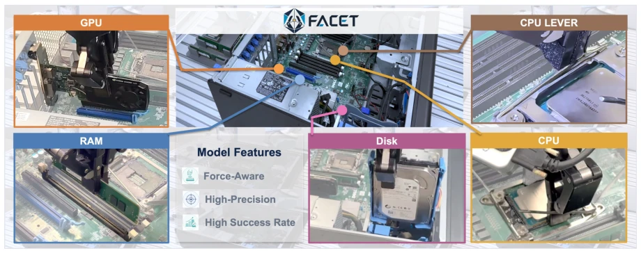
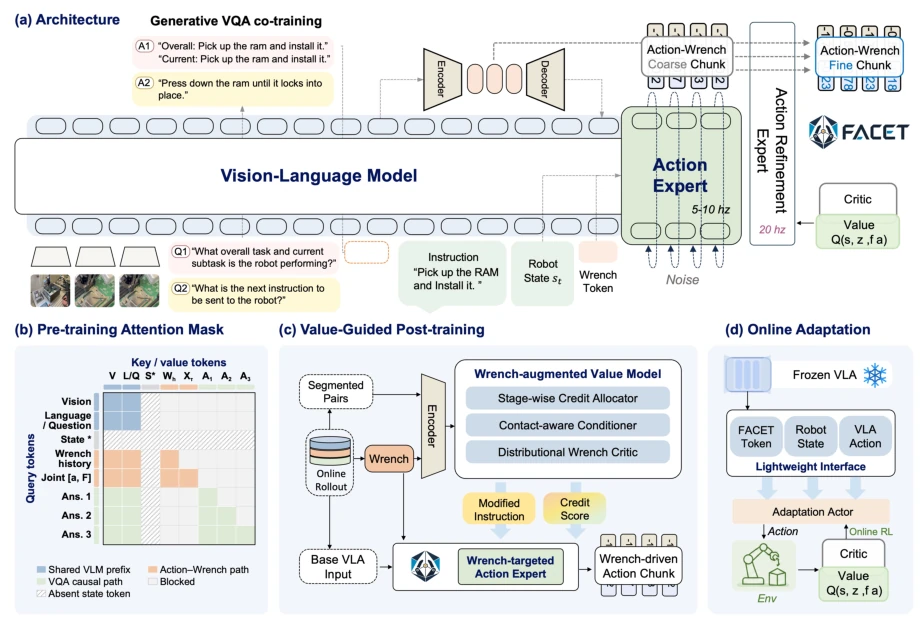
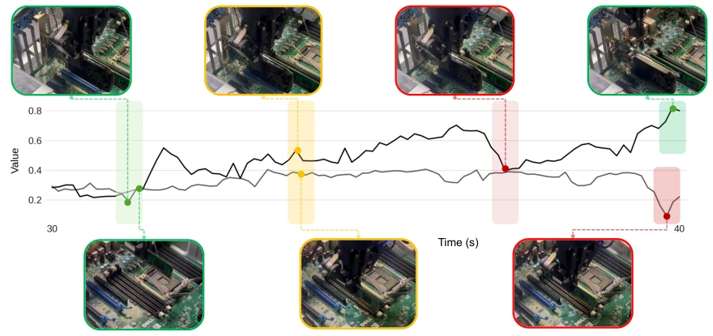
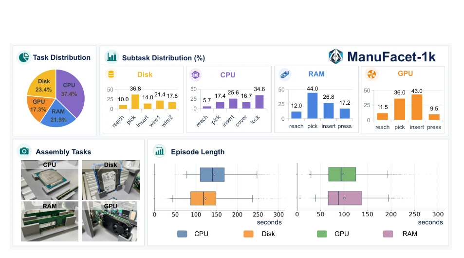
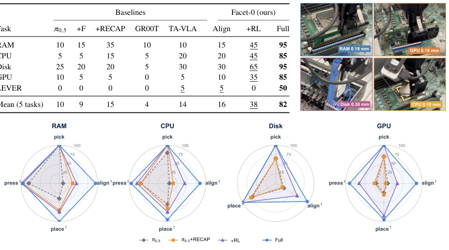
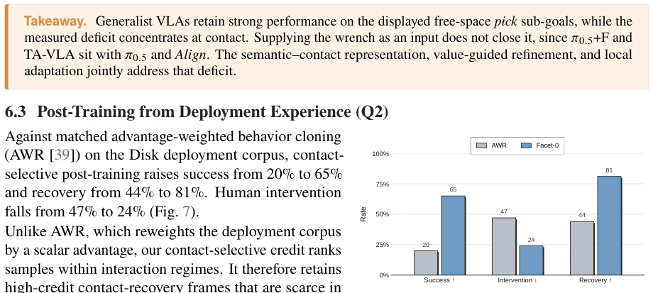
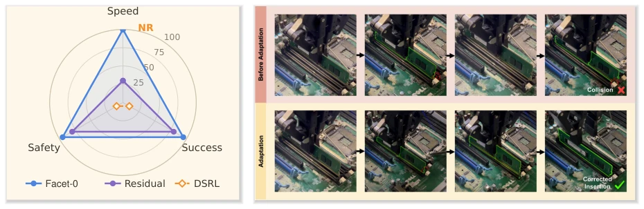
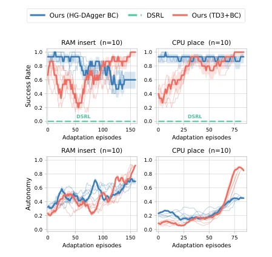
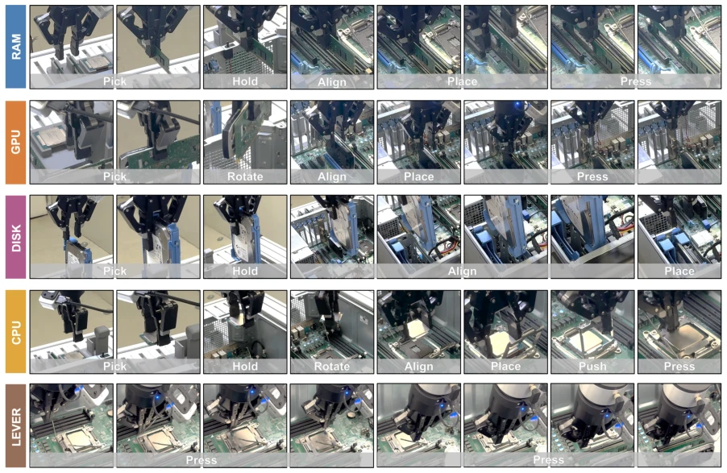
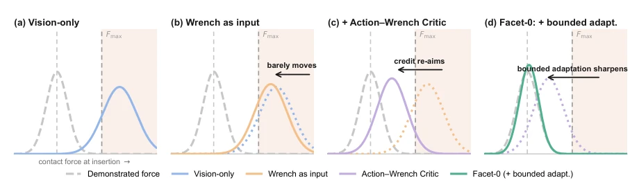

Facet-0 attempts to address the "last few millimeters" pain point in robotic precision assembly, which is indeed a stumbling block that prevents general VLA models from changing from "looking like they can do it" to "actually being able to do it". The authors are clever; unlike some papers that only treat force sensing as input, they treat "expected force" as a direct output of action generation. This "proactive" design is theoretically sound. However, although the 82% success rate significantly outperforms the baseline, it is still far from industrial-grade "zero errors", especially the LEVER task with only 50% success rate, which exposes the model's fragility in pure contact scenarios. Furthermore, relying on expensive six-axis torque sensors and 1000 hours of data, this "resource-intensive" training cost makes it unattainable for ordinary laboratories. However, it indeed proves that in the field of precision assembly, having only vision and language is not enough; physical consequences must be "calculated" into actions.
Robotic precision assembly in the real world (such as computer hardware assembly) requires sub-millimeter precision and robust contact interaction. Existing Vision-Language-Action (VLA) models, although possessing broad semantic generalization capabilities, often fail when handling contact-rich tasks. Literature [7, 8, 26] points out that modern VLA strategies usually only focus on geometric motion trajectories, treating contact as feedback or low-level signals after execution, rather than the causal consequences of actions. In sub-millimeter gaps, visually similar actions can lead to drastically different physical results (such as smooth insertion vs. jamming), and existing methods cannot distinguish this subtle difference. Furthermore, traditional force control methods [21, 22, 42] rely on hand-crafted parameters and are difficult to transfer across tasks. Therefore, the core question lies in: how to enable general robot models to predict, evaluate, and adapt to the physical contact consequences brought by actions while maintaining semantic breadth?

Figure 1. Qualitative overview of Facet-0 in precision computer assembly. The center shows the robotic workcell, and the surrounding panels show representative GPU, RAM, Disk, CPU, and CPU LEVER operations. Across these contact-rich tasks, Facet-0 targets precise alignment, force-aware execution, and reliable completion.
方法Method
Facet-0 的核心是一个“语义 - 接触”对齐的生成框架，整体流程分为预训练、价值引导微调和本地适应三个阶段。首先，模型基于 PaliGemma 视觉语言骨干和 Flow Matching 动作专家构建。它不直接预测动作，而是联合预测“动作块”和“预期的腕部力矩（Wrench）”。输入包括多视角图像、语言指令、运动学状态以及过去 K 帧的力矩历史，通过融合编码器生成共享的语义 - 接触表示。Flow Matching 头同时生成未来 H 步的笛卡尔动作和对应的预期力矩分布，其中只有动作被执行，力矩作为预测后果用于后续评估。其次，引入“动作 - 力矩评论家（Action-Wrench Critic）”。该评论家基于分布回归，评估动作与预期力矩组合的价值，能够区分几何进度相似但接触结果（如顺畅插入 vs. 卡死）不同的轨迹。利用接触选择性信用分配（Contact-Selective Credit），模型仅对高价值的接触帧进行强化学习微调，从而优化关键交互。最后，针对新部件，采用“有界本地演员（Bounded Local Actor）”。它复用冻结的骨干网络，仅微调轻量级执行头，利用预测的力矩作为辅助监督信号，实现快速适应而不破坏全局语义表示。
The core of Facet-0 is a "semantic-contact" aligned generation framework, with the overall process divided into three stages: pre-training, value-guided fine-tuning, and local adaptation. First, the model is built based on PaliGemma vision-language backbone and Flow Matching action expert. It does not predict actions directly, but jointly predicts "action chunks" and "expected wrist wrench". Inputs include multi-view images, language instructions, kinematic states, and past K frames of torque history, generating shared semantic-contact representations through a fusion encoder. The Flow Matching head simultaneously generates Cartesian actions for future H steps and the corresponding expected torque distribution, where only actions are executed, and torque is used as predicted consequences for subsequent evaluation. Second, an "Action-Wrench Critic" is introduced. This critic is based on distribution regression, evaluating the value of the action and expected torque combination, capable of distinguishing trajectories with similar geometric progress but different contact results (such as smooth insertion vs. jamming). Utilizing Contact-Selective Credit, the model only performs reinforcement learning fine-tuning on high-value contact frames, thereby optimizing key interactions. Finally, for new parts, a "Bounded Local Actor" is adopted. It reuses the frozen backbone network, only fine-tuning a lightweight execution head, utilizing predicted torque as auxiliary supervision signals to achieve fast adaptation without destroying global semantic representations.

Figure 3. Overview of Facet-0. (a) Visual–language context, robot state, and wrench history form a shared semantic–contact representation for coarse-to-fine action–wrench decoding. (b) Structured attention shares the visual–language prefix while separating the action–wrench and causal VQA paths. (c) Phase-segmented rollouts train an Action–Wrench Critic; contact-selective credit then refines the shared action expert. (d) A bounded local actor reuses the frozen representation and policy reference; its critics evaluate executable actions, while its auxiliary wrench prediction remains non-commanded.

Figure 4. Action–Wrench Critic values during deployment. A value estimate based on vision and state alone remains insensitive to fine-grained contact, whereas scoring the predicted action–wrench proposal separates a clean GPU insertion from a failure mode that is visually difficult to distinguish.
The study is conducted on the ManuFacet-1K dataset, containing 1000 hours of force-synced data across three embodied, multi-manufacturing units. Tested on five sub-millimeter computer assembly tasks (CPU, RAM, Disk, GPU, LEVER). Compared to the strongest baseline (such as RECAP-style VLA), Facet-0's average success rate increased from 15% to 82%, localization accuracy reached 0.5mm, and latency was only 50ms. Ablation studies show that semantic-contact alignment contributed to basic performance (16%), value-guided fine-tuning increased it to 38%, and local adaptation further pushed performance to 82%. Especially on unseen parts, with only 10 demonstrations and 3 hours of training, Facet-0 reached 45% success rate, far exceeding the baseline's 5%. Torque signals are indispensable in the three links of prediction, evaluation, and adaptation; removing all torque roles would cause the success rate to plummet by 50 percentage points.

Figure 2. ManuFacet-1K at a glance. The ManuFacet-1K corpus contains approximately 1,000 hours of force- synchronized demonstrations and closed-loop rollouts, collected through a multi-center network across four precision installation tasks (CPU 37.3%, RAM 21.9%, Disk 23.4%, GPU 17.3%), at 0.5 mm action resolution.

Figure 6. Sub-goal success on four insertion tasks. Performance remains high in free-space pick and contracts at contact-critical sub-goals (†); the two-step LEVER task is reported in Tables 2 and 7.

Figure 7. Disk post-training with matched data and budget. Contact-selective RL raises success and recovery while reducing intervention. Arrows indicate preferred directions; Table 9 reports values.

Figure 9. Adaptation on RAM insertion. Left: normalized comparison with position-only residual adaptation and DSRL; speed is time to 90% success, and NR means not reached. Right: after an off-axis collision, the adapted policy backs off, re-aligns and seats the module. Other axes and raw values are in Table 10.

Figure 8. On-robot adaptation dynamics, 𝑛= 10 runs per curve. Top: success rate. Bottom: autonomy, the fraction of steps run without a supervisor takeover. Pale traces show representative individual runs; bold traces show a 15-episode trailing mean with a local 1𝜎band.
其他图片Other Figures

Figure 5. The five tasks of the assembly suite, each shown as the sequence of sub-goals the policy executes. Verbs are shared across tasks: pick, hold and rotate are free-space, while align, place, push and press are contact-critical and hand control to the refinement expert. The LEVER task closes the CPU socket lever in two sequential presses and is the only task with no free-space sub-goal. Clearances and force limits are in Appendix A, Table 5.

Figure 10. Schematic of how the action–wrench representation is intended to shape contact behavior across optimization. The distributions illustrate the roles of input conditioning, Action–Wrench valuation, and bounded local adaptation; they are conceptual rather than empirical measurements.